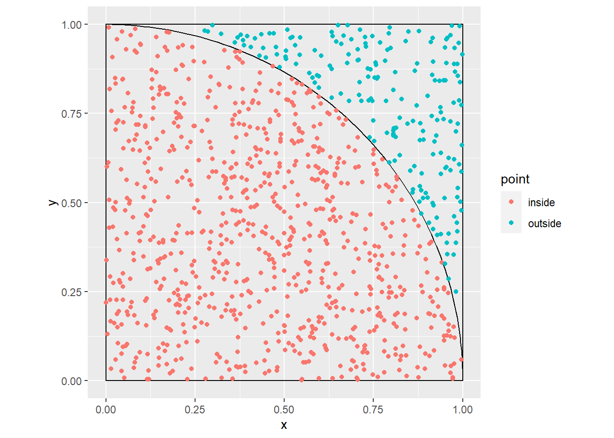
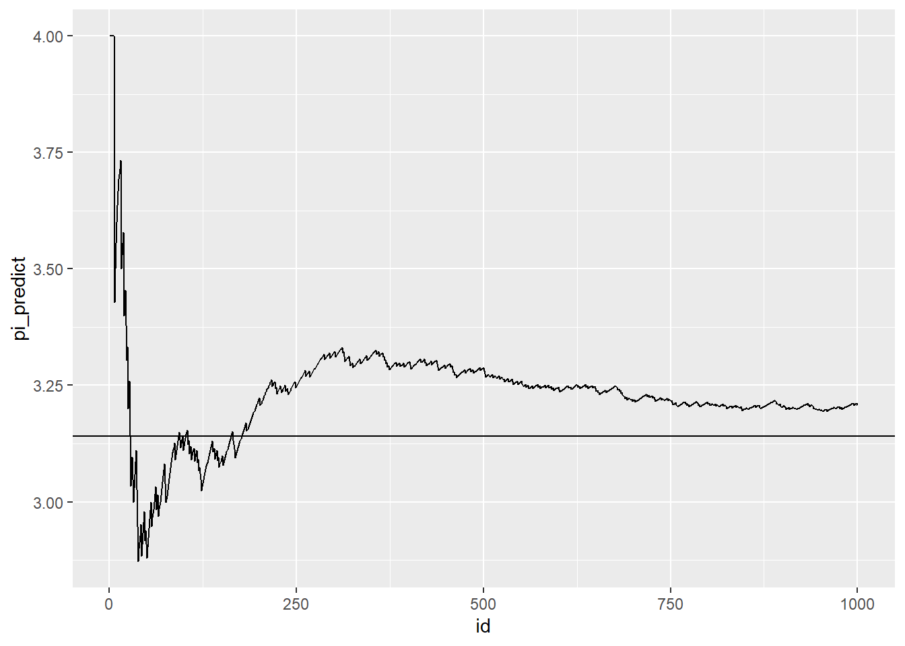
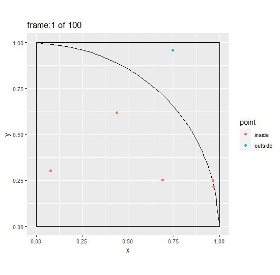
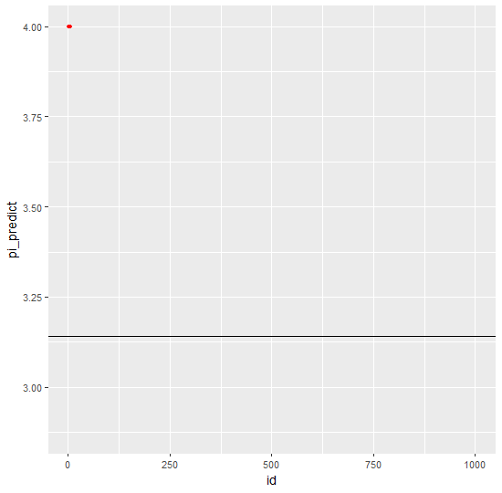

蒙特卡洛计算Π
20 Jul 2020
866 Words|Read in about 2 Min|本文总阅读量次
π值的计算
构造一个单位正方形和一个单位圆的1/4，往整个区域内随机投入点，根据点到原点的距离>1还是<=1判断点是落在1/4的圆内还是在圆外，从而根据落在两个不同区域的点的数目，求出两个区域的比值。这个比值乘以4，即是圆周率π。
圆的面积：\(\frac{1}{4}\pi\)
正方形面积：\(1\)
概率：\(p = \frac{1}{\frac{1}{4}\pi} = \frac{圆内点数}{圆外点个数}\)
所以,\(\pi = 4p\)
library(tidyverse)
pi_data <- function(n){
x0 <- 0
y0 <- 0
x <- runif(n)
y <- runif(n)
distances <- sqrt((x-x0)^2+(y-y0)^2)
point <- ifelse(distances <= 1, "inside", "outside")
id <- 1:n
pi_predict <- cumsum(point == "inside")/id * 4
data <- data.frame(id, x, y, distances, point, pi_predict)
}
data1000 <- pi_data(n = 1000)p1 <- ggplot(data1000) +
geom_rect(aes(xmin = 0,xmax = 1,ymin = 0, ymax = 1),color = "black",alpha = 0) +
ggforce::geom_arc(aes(x0 = 0, y0 = 0,r = 1,
start = 0,end = pi/2)) +coord_fixed() +
geom_point(data = data1000,aes(x,y,color = point))
p1

试下动态图
## Warning: 程辑包'gganimate'是用R版本4.0.2 来建造的anim <- ggplot(data1000) +
geom_rect(aes(xmin = 0,xmax = 1,ymin = 0, ymax = 1),color = "black",alpha = 0) +
ggforce::geom_arc0(aes(x0 = 0, y0 = 0,r = 1,
start = 0,end = pi/2)) +coord_fixed() +
geom_point(data = data1000,aes(x,y,color = point,group = id)) +
transition_reveal(along = id) +
labs(title = "frame:{frame} of {nframes}")
anim2 <-animate(anim, nframes = 100, fps = 10,
width = 550, height = 540, res = 90,
renderer = gifski_renderer(loop = T))
anim2
make_run2 <- function(pi_data){
anim <- ggplot(pi_data,aes(id ,pi_predict)) +
geom_line() +
geom_point(aes(group = seq_along(id)),color = "red",size = 1)+
transition_reveal(id)+
geom_hline(yintercept = pi)
anim2 <-animate(anim, nframes = 100, fps = 10,
width = 550, height = 540, res = 90,
renderer = gifski_renderer(loop = T))
}
last <- make_run2(data1000)
last